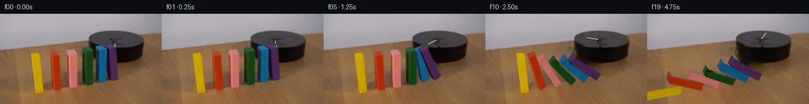

![首帧]()

Round 00
2026-11-04T22:26:26.753994+00:00像素候选变化代码 +215/−0inspection 更新
pixels b124a5e41d0550dd · code fc6efb56670e029a
查看本轮 generate.py 真实 diff
--- previous/generate.py
+++ current/generate.py
@@ -0,0 +1,215 @@
+"""Local source-texture warps and analytic, constrained domino geometry."""
+from pathlib import Path
+import math
+import numpy as np
+import cv2
+from PIL import Image, ImageDraw, ImageFilter
+from artifact_io import save
+
+ROOT=Path(__file__).resolve().parent
+SRC=np.array(Image.open(ROOT/'first_frame.png').convert('RGB'))
+W,H=256,144
+S=4
+# Faces, ordered top-left, top-right, bottom-right, bottom-left for front;
+# back-left, front-left, front-bottom, back-bottom for the side.
+DATA=[
+ ('yellow',[[51,71],[63,70],[69,125],[56,127]],[[49,63],[51,71],[56,127],[54,119]],[[49,63],[61,62],[63,70],[51,71]],2.60),
+ ('orange',[[84,68],[95,66],[98,120],[86,123]],[[79,61],[84,68],[86,123],[81,115]],[[79,61],[90,59],[95,66],[84,68]],2.20),
+ ('pink',[[111,67],[123,65],[123,115],[112,118]],[[106,59],[111,67],[112,118],[107,110]],[[106,59],[116,57],[123,65],[111,67]],1.80),
+ ('green',[[138,65],[149,61],[147,112],[136,115]],[[130,57],[138,65],[136,115],[131,107]],[[130,57],[141,53],[149,61],[138,65]],1.40),
+ ('blue',[[157,61],[169,57],[168,107],[156,110]],[[151,52],[157,61],[156,110],[151,102]],[[151,52],[162,50],[169,57],[157,61]],1.00),
+ ('purple',[[172,58],[184,54],[187,102],[176,107]],[[166,51],[172,58],[176,107],[169,100]],[[166,51],[176,48],[184,54],[172,58]],0.65),
+]
+
+blocks=[]
+allmask=np.zeros((H,W),np.uint8)
+for name,front,side,top,start in DATA:
+ front,side,top=[np.array(q,dtype=np.float32) for q in (front,side,top)]
+ p=front[3].copy();wv=front[2]-p;vv=front[0]-p;dv=side[3]-p
+ mask=np.zeros((H,W),np.uint8)
+ for q in (front,side,top):cv2.fillConvexPoly(mask,np.rint(q).astype(np.int32),255)
+ mask=cv2.dilate(mask,np.ones((3,3),np.uint8))
+ # The original soft shadow projects behind/left of each base.
+ sh=np.zeros((H,W),np.uint8)
+ shadowpoly=np.array([p+[-16,-4],p+[-2,-22],p+wv+[-1,-17],p+wv+[8,2],p+[0,5]],np.int32)
+ cv2.fillConvexPoly(sh,shadowpoly,255)
+ sh=np.array(Image.fromarray(sh).filter(ImageFilter.GaussianBlur(2.3)))
+ removal=np.maximum(mask,sh)
+ allmask=np.maximum(allmask,removal)
+ textures=[]
+ for q in (front,side,top):
+ dst=np.array([[0,0],[63,0],[63,191],[0,191]],np.float32)
+ M=cv2.getPerspectiveTransform(q,dst)
+ textures.append(cv2.warpPerspective(SRC,M,(64,192),flags=cv2.INTER_LINEAR))
+ blocks.append(dict(name=name,front=front,side=side,top=top,p=p,w=wv,v=vv,d=dv,
+ mask=mask,removal=removal,start=start,textures=textures,
+ worldx=float(p[0]),width=float(wv[0]),height=float(np.linalg.norm(vv))))
+
+# Inpaint only the moving silhouettes and nearby soft shadow, using source pixels.
+clean=cv2.inpaint(SRC,(allmask>5).astype(np.uint8)*255,4,cv2.INPAINT_TELEA)
+# Recover the platform where the row occluded its front: use its visible right half.
+yy,xx=np.mgrid[:H,:W]
+topdisk=((xx-184.2)/43.7)**2+((yy-43.2)/16.1)**2<=1
+bottomdisk=((xx-184.2)/43.7)**2+((yy-61.4)/16.4)**2<=1
+sideband=bottomdisk & (yy>=43.0) & ~topdisk
+for y in range(H):
+ for x in range(W):
+ if allmask[y,x] and (topdisk[y,x] or sideband[y,x]):
+ sx=int(np.clip(round(368.4-x),190,227))
+ # A slight tonal correction keeps the reflected dark cylinder natural.
+ clean[y,x]=SRC[y,sx]
+# Remove the short tan original striker shaft; preserve the dark attachment.
+armmask=np.zeros((H,W),np.uint8)
+cv2.rectangle(armmask,(179,46),(184,53),255,-1)
+clean=cv2.inpaint(clean,armmask,2,cv2.INPAINT_TELEA)
+Image.fromarray(clean).save(ROOT/'.tmp/clean_background.png')
+
+# Convex polygon contact in a vertical world cross-section. Each block pivots
+# about its leading bottom edge. Contact limits the angle of its right neighbor.
+def worldpoly(b,theta):
+ p=np.array([b['worldx'],0.])
+ v=b['height']*np.array([-math.sin(theta),math.cos(theta)])
+ w=b['width']*np.array([math.cos(theta),math.sin(theta)])
+ return np.array([p,p+w,p+w+v,p+v])
+
+def intersects(a,b):
+ for poly in (a,b):
+ for edge in np.roll(poly,-1,axis=0)-poly:
+ n=np.array([-edge[1],edge[0]])
+ pa=a@n;pb=b@n
+ if pa.max()<=pb.min()+0.015 or pb.max()<=pa.min()+0.015:return False
+ return True
+
+def constrain_angle(i,desired,left):
+ if i==0:return min(desired,math.pi/2)
+ neighbor=worldpoly(blocks[i-1],left)
+ # Find the first contact while rotating; a full-angle-only check can miss it.
+ prev=0.
… diff truncated; 128 more lines …